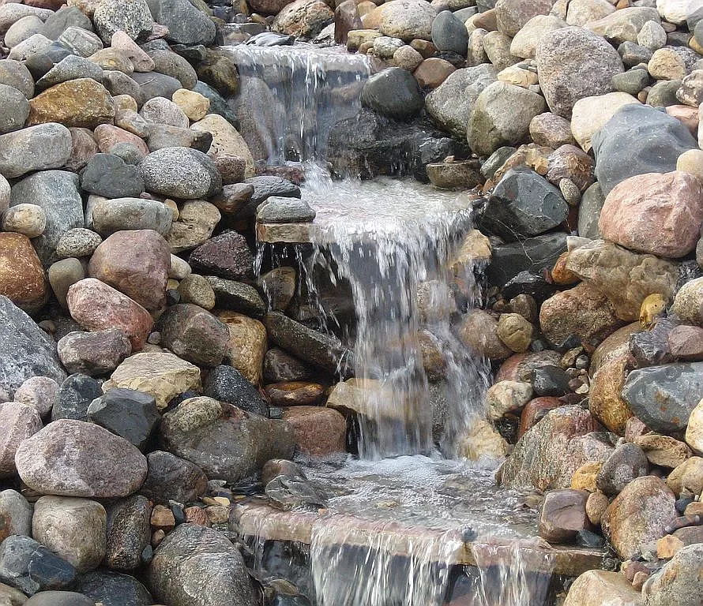
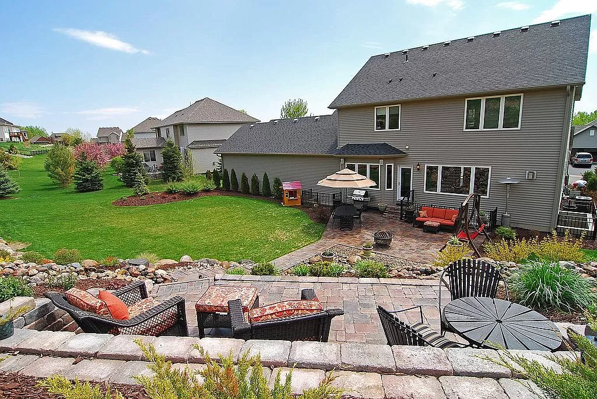
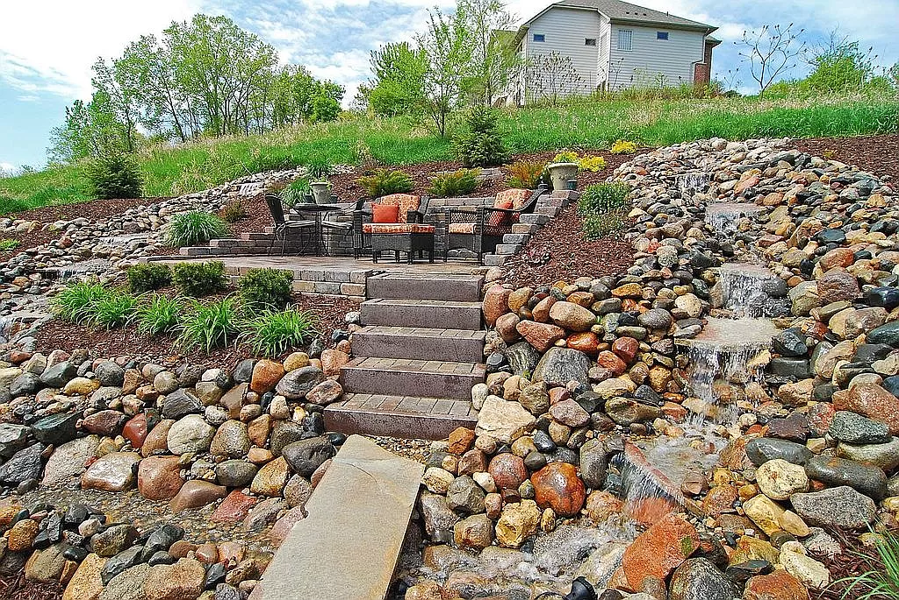
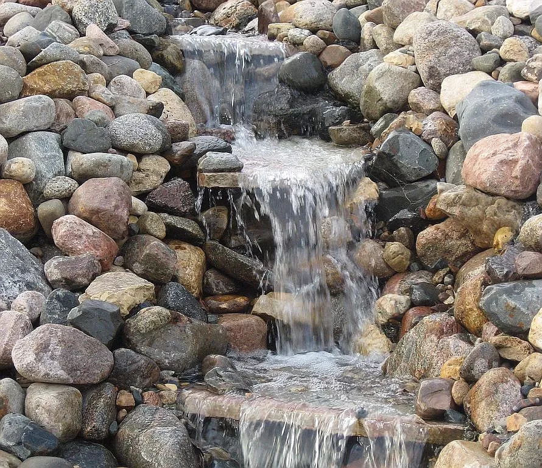
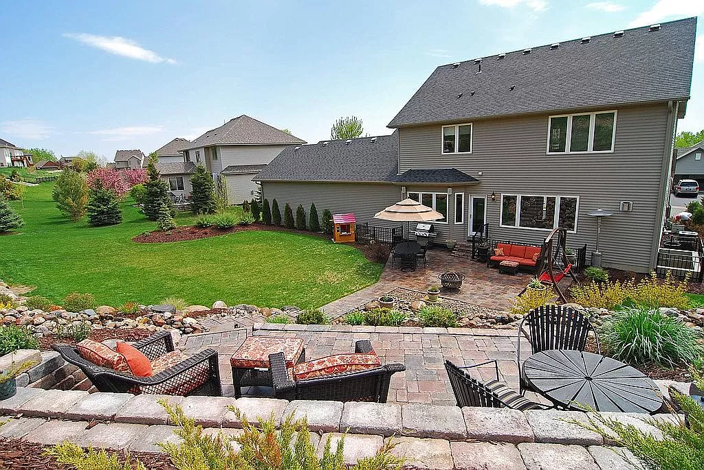
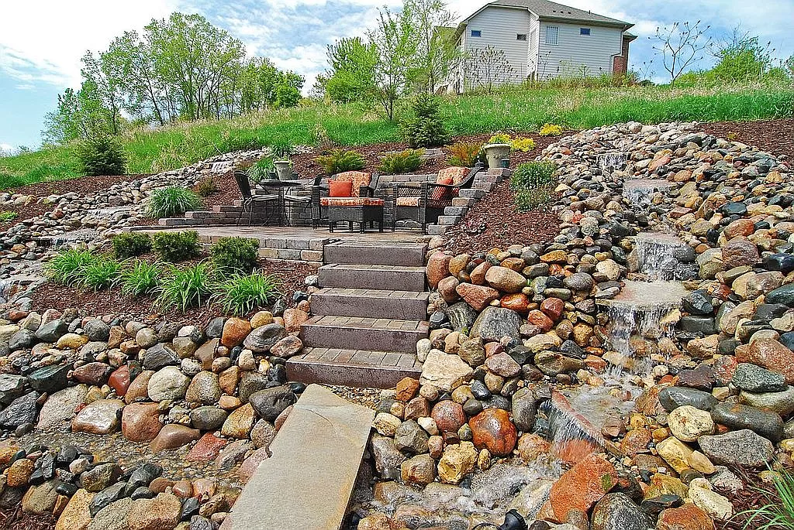

Chaska
Using the natural slope of this backyard, Chris carved out space for an elevated patio, nestled within a retaining wall that doubles as extra seating. The patio offers the perfect place to enjoy the unique sounds of the custom water feature cascading down the hill to the outdoor space below. At the base, a large paver patio offers lots of room for entertaining and endless outdoor fun.
- waterfall
- patio
- stairs
- plant design
- retaining walls
 




